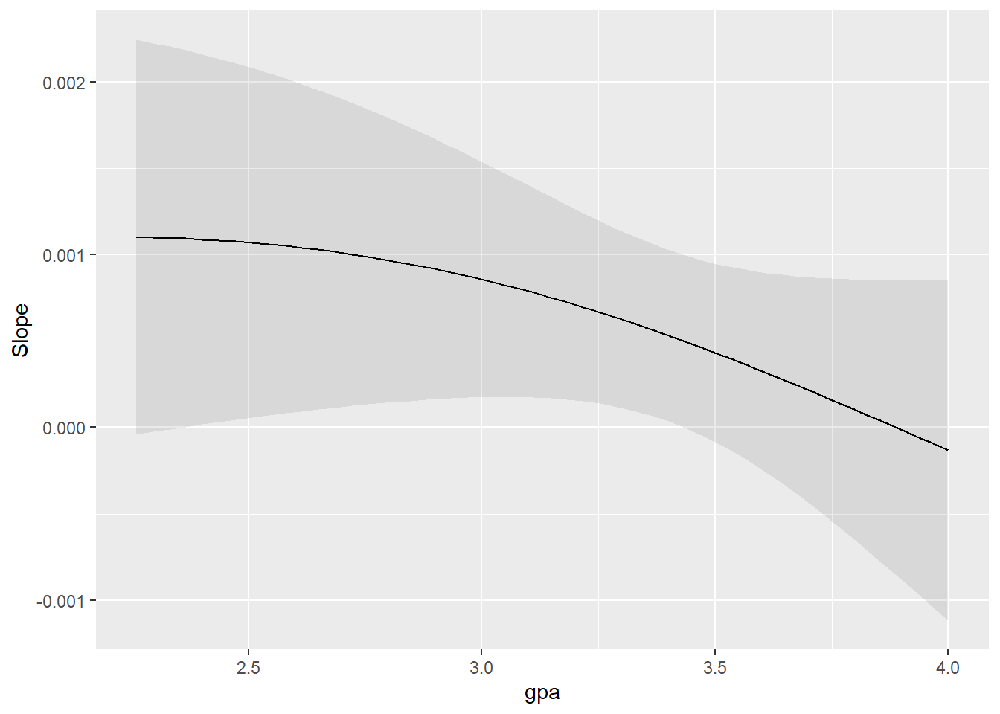
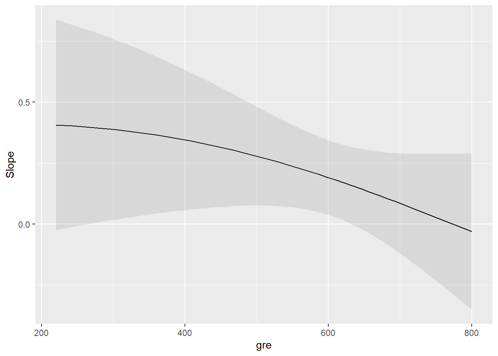
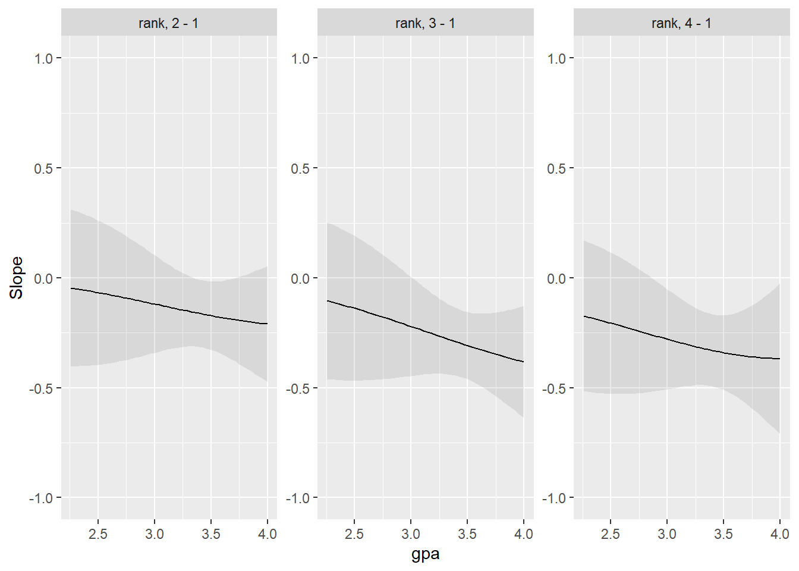
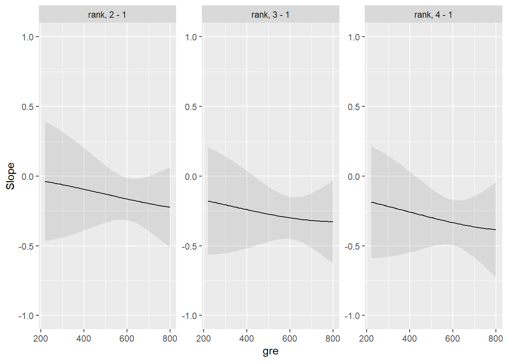
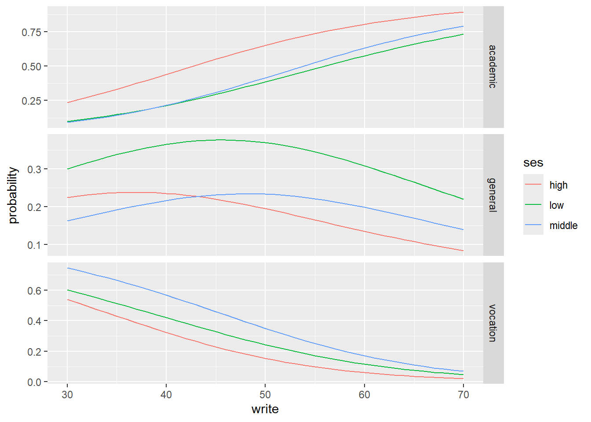

R ≥ 4.1 y paquetes: quantreg, ggplot2, dplyr, AER, broom, purrr, tidyr, scales.
Dataset de ejemplo: AER::CPS1985 (salarios en EE. UU. 1985).
2 Resumen de la sesión
En esta sesión introducimos modelos de elección discreta para variables dependientes cualitativas. Empezamos con casos binarios y el modelo Logit (formulación, interpretación y validación) y avanzamos a elecciones con m>2 alternativas mediante Logit Multinomial. Cerraremos con criterios para decidir entre binario, multinomial u ordinal y simulaciones reproducibles (código oculto).
3 Objetivos de aprendizaje
Distinguir entre variables binarias, ordinales y nominales y seleccionar el modelo adecuado.
Formular e interpretar un Logit (odds, OR, efectos marginales y ajuste).
Entender la teoría de utilidad aleatoria y la especificación del Logit Multinomial.
Reconocer cuándo usar modelos ordinales (líneas paralelas) vs multinomiales.
4 Marco conceptual
Los modelos de elección discreta estudian la probabilidad de que un individuo elija una opción dentro de un conjunto finito. Ejemplos:
Adopción de un crédito (sí/no)
Compra online (sí/no)
Modo de transporte (bus/auto/bici)
Elección de marca (m>2, nominal)
Satisfacción en escalas Likert (ordinal).
4.1 Elección binaria y modelo Logit
Sea \((Y_i \in {0,1})\). El Logit modela \((p_i=Pr(Y_i=1\mid X_i))\) con
Se estima por máxima verosimilitud; los coeficientes se interpretan como odds ratios \((\exp(\beta_j))\); los efectos en probabilidad mediante efectos marginales.
Important
Cuándo usar Logit (binario): cuando la respuesta tiene 2 categorías excluyentes y nos interesa modelar probabilidades acotadas en \((0,1)\) con elasticidad no lineal. Evita el MLP por predicciones fuera de \((0,1)\), heterocedasticidad y linealidad estricta.
4.2 De binario a multinomial
Cuando \((m>2)\) sin orden, partimos de utilidad aleatoria:
El individuo (i) elige la alternativa (j) con mayor utilidad
\[(U_{ij}=X_i'\beta_j+\varepsilon_{ij})\].
Con errores i.i.d. se deriva el Logit Multinomial (base category logit):
Relación con múltiples logits binarios y eficiencia de estimar simultáneamente (vs. pares por separado). Considere el supuesto IIA (independencia de alternativas irrelevantes) y sus implicaciones empíricas.
Note
¿Multinomial u ordinal? Si las categorías tienen orden (p. ej., baja, media, alta), prefiera logit/probit ordinal (líneas paralelas). Usar un modelo nominal sobre datos ordinales pierde eficiencia; usar un ordinal sobre datos nominales introduce sesgo.
5 Codigo Modelo Logit - Probit
Un investigador está interesado en cómo las variables, como el GRE (puntaje del examen de Graduados), el GPA (promedio de calificaciones) y el prestigio de la institución de pregrado, tienen efecto en la admisión a la escuela de postgrado.
La variable de respuesta, admitir / no admitir, es una variable binaria.
admit gre gpa rank
Min. :0.0000 Min. :220.0 Min. :2.260 Min. :1.000
1st Qu.:0.0000 1st Qu.:520.0 1st Qu.:3.130 1st Qu.:2.000
Median :0.0000 Median :580.0 Median :3.395 Median :2.000
Mean :0.3175 Mean :587.7 Mean :3.390 Mean :2.485
3rd Qu.:1.0000 3rd Qu.:660.0 3rd Qu.:3.670 3rd Qu.:3.000
Max. :1.0000 Max. :800.0 Max. :4.000 Max. :4.000
Code
sapply(mydata, sd)
admit gre gpa rank
0.4660867 115.5165364 0.3805668 0.9444602
Code
xtabs(~admit + rank, data = mydata)
rank
admit 1 2 3 4
0 28 97 93 55
1 33 54 28 12
Code
# MODELO LOGIT mydata$rank <-factor(mydata$rank)mylogit <-glm(admit ~ gre + gpa + rank, data = mydata, family ="binomial")summary(mylogit)
Call:
glm(formula = admit ~ gre + gpa + rank, family = "binomial",
data = mydata)
Deviance Residuals:
Min 1Q Median 3Q Max
-1.6268 -0.8662 -0.6388 1.1490 2.0790
Coefficients:
Estimate Std. Error z value Pr(>|z|)
(Intercept) -3.989979 1.139951 -3.500 0.000465 ***
gre 0.002264 0.001094 2.070 0.038465 *
gpa 0.804038 0.331819 2.423 0.015388 *
rank2 -0.675443 0.316490 -2.134 0.032829 *
rank3 -1.340204 0.345306 -3.881 0.000104 ***
rank4 -1.551464 0.417832 -3.713 0.000205 ***
---
Signif. codes: 0 '***' 0.001 '**' 0.01 '*' 0.05 '.' 0.1 ' ' 1
(Dispersion parameter for binomial family taken to be 1)
Null deviance: 499.98 on 399 degrees of freedom
Residual deviance: 458.52 on 394 degrees of freedom
AIC: 470.52
Number of Fisher Scoring iterations: 4
Tanto gre como gpa son estadísticamente significativos, al igual que los tres términos para rango. Los coeficientes de regresión logística dan el cambio en las probabilidades del logaritmo del resultado para un aumento de una unidad en la variable predictora.
Por cada cambio de unidades en gre, las probabilidades log de admisión (versus no admisión) aumentan en 0.002.
Para un aumento de una unidad en gpa, las probabilidades de registro de admisión a la escuela de posgrado aumenta en 0,804.
Las variables indicadoras de rango tienen una interpretación ligeramente diferente.
Por ejemplo, haber asistido a una institución de pregrado con un rango de 2, frente a una institución con un rango de 1,cambia las probabilidades de registro de admisión en -0.675.
Debajo de la tabla de coeficientes se encuentran los índices de ajuste, incluidos los residuales nulos y de desviación y el AIC.
Más adelante mostramos un ejemplo de cómo puede usar estos valores para ayudar a evaluar el ajuste del modelo.
Ahora podemos decir que para un aumento de una unidad en gpa, las probabilidades de ser admitido en la escuela de postgrado (versus no ser admitido) aumentan en un factor de 2.23.
También puede usar las probabilidades pronosticadas para ayudarlo a comprender el modelo. Las probabilidades pronosticadas se pueden calcular para variables predictoras tanto categóricas como continuas. Para crear probabilidades pronosticadas, primero necesitamos crear un nuevo marco de datos con los valores que queremos que las variables independientes adopten para crear nuestras predicciones.
En el resultado anterior, vemos que la probabilidad prevista de ser aceptado en un programa de postgrado es de 0.52 para estudiantes de las instituciones de pregrado de mayor prestigio (rango = 1) y 0.18 para estudiantes de las instituciones de menor rango (rango = 4), con gre y gpa por sus valores medios. Podemos hacer algo muy similar para crear una tabla de probabilidades predichas que varíe el valor de gre y rank. Vamos a trazarlos, por lo que crearemos 100 valores de gre entre 200 y 800, en cada valor de rango (es decir, 1, 2, 3 y 4).
Code
newdata2 <-with(mydata, data.frame(gre =rep(seq(from =200, to =800, length.out =100),4), gpa =mean(gpa), rank =factor(rep(1:4, each =100))))
El código para generar las probabilidades predichas (la primera línea a continuación) es el mismo que antes, excepto que también vamos a pedir errores estándar para que podamos trazar un intervalo de confianza. Obtenemos las estimaciones en la escala del enlace y transformamos los valores pronosticados y los límites de confianza en probabilidades.
Hosmer and Lemeshow goodness of fit (GOF) test
data: myprobit$y, fitted(myprobit)
X-squared = 12.609, df = 8, p-value = 0.126
Code
# Comparación de Modeloslibrary(memisc)mtable(myprobit, mylogit)
Calls:
myprobit: glm(formula = admit ~ gre + gpa + rank, family = binomial(link = "probit"),
data = mydata)
mylogit: glm(formula = admit ~ gre + gpa + rank, family = "binomial",
data = mydata)
============================================
myprobit mylogit
--------------------------------------------
(Intercept) -2.387*** -3.990***
(0.674) (1.140)
gre 0.001* 0.002*
(0.001) (0.001)
gpa 0.478* 0.804*
(0.197) (0.332)
rank: 2/1 -0.415* -0.675*
(0.195) (0.316)
rank: 3/1 -0.812*** -1.340***
(0.208) (0.345)
rank: 4/1 -0.936*** -1.551***
(0.245) (0.418)
--------------------------------------------
Log-likelihood -229.207 -229.259
N 400 400
============================================
Significance: *** = p < 0.001;
** = p < 0.01;
* = p < 0.05
Code
library(marginaleffects)avg_slopes(mylogit)
Esto me permite cuantificar el cambio promedio en la probabilidad de admisión (admit) asociado con cambios unitarios en las variables explicativas (gre, gpa y rank), proporcionando una interpretación más clara de los efectos directos de cada variable en la probabilidad de admisión.
En este bloque de código, estoy ajustando un modelo de regresión logística (logit) para predecir la probabilidad de admisión (admit) en función del puntaje GRE, el GPA, el rango de la institución de pregrado (rank) y la interacción entre GRE y GPA.
Luego, utilizo la función plot_slopes para visualizar cómo varía la pendiente de la probabilidad de admisión en función de GRE condicionado al GPA y viceversa. Esto me permite entender mejor la interacción entre GRE y GPA y su efecto en la probabilidad de admisión.
Code
mylogit2 <-glm(admit ~ gre + gpa + gre*gpa + rank, data = mydata, family ="binomial")# Graficar la pendiente del efecto de GRE en la probabilidad de admisión condicionada al GPAplot_slopes(mylogit2, variables="gre", condition ="gpa")

Code
# Graficar la pendiente del efecto de GPA en la probabilidad de admisión condicionada al GREplot_slopes(mylogit2, variables="gpa", condition ="gre")

Code
# Ahora con la variable rankmylogit2 <-glm(admit ~ gre + gpa + rank*gpa + rank, data = mydata, family ="binomial")plot_slopes(mylogit2, variables="rank", condition ="gpa")+lims(y=c(-1,1))

Code
mylogit2 <-glm(admit ~ gre + gpa + rank*gre + rank, data = mydata, family ="binomial")plot_slopes(mylogit2, variables="rank", condition ="gre")+lims(y=c(-1,1))

5.3 Modelo Multinomial
Ejemplo 1. Las elecciones ocupacionales de las personas pueden verse influenciadas por las ocupaciones de sus padres y su propio nivel educativo. Podemos estudiar la relación entre la elección de ocupación y el nivel educativo y la ocupación del padre. Las elecciones ocupacionales serán la variable de resultado que consta de categorías de ocupaciones.
Ejemplo 2. Un biólogo puede estar interesado en las elecciones de alimentos que hacen los caimanes. Los caimanes adultos pueden tener preferencias diferentes a las de los jóvenes. La variable de resultado aquí serán los tipos de alimentos, y las variables predictoras podrían ser el tamaño de los caimanes y otras variables ambientales.
Ejemplo 3. Los estudiantes que ingresan a la escuela secundaria eligen programas entre programa general, programa vocacional y programa académico. Su elección podría modelarse utilizando su puntaje de escritura y su estatus económico social.
El conjunto de datos contiene variables sobre 200 estudiantes. La variable de resultado es ‘prog’ tipo de programa. Las variables predictoras son el status socioeconómico, ‘ses’ una variable categórica de tres niveles, y la puntuación de escritura, ‘write’ una variable continua.
A continuación utilizamos la función multinom del nnet paquete para estimar un modelo de regresión logística multinomial. Hay otras funciones en otros paquetes de R capaces de realizar regresión multinomial.
Primero, debemos elegir el nivel de nuestro resultado que deseamos utilizar como línea de base y especificarlo en la función relevel. Luego, ejecutamos nuestro modelo usando multinom. El paquete multinom no incluye el cálculo del valor p para los coeficientes de regresión, por lo que calculamos los valores p utilizando las pruebas de Wald (aquí pruebas z).
Code
ml$prog2 <-relevel(ml$prog, ref ="academic")test <-multinom(prog2 ~ ses + write, data = ml)
# weights: 15 (8 variable)
initial value 219.722458
iter 10 value 179.982880
final value 179.981726
converged
Un aumento de una unidad en la variable write se asocia con una disminución en las probabilidades logarítmicas de estar en un programa general versus un programa académico en una cantidad de 0,058.
Un aumento de una unidad en la variable write se asocia con la disminución en las probabilidades logarítmicas de estar en un programa vocacional versus un programa académico. por la cantidad de .1136
Las probabilidades logarítmicas de estar en un programa general frente a un programa académico disminuirán en 1.163 si se pasa de ses=“low”a ses=“high”
Las probabilidades logarítmicas de estar en un programa general frente a un programa académico disminuirán en 0.533 si se pasa de ses=“low”a ses=“middle”, aunque este coeficiente no es significativo.
Las probabilidades logarítmicas de estar en un programa vocacional frente a un programa académico disminuirán en 0.983 si se pasa de ses=“low”a ses=“high”
Las probabilidades logarítmicas de estar en un programa vocacional frente a un programa académico aumentarán en 0.291 si se pasa de ses=“low”a ses=“middle”,aunque este coeficiente no es significativo.
A continuación, si queremos examinar los cambios en la probabilidad predicha asociados con una de nuestras dos variables, podemos crear pequeños conjuntos de datos variando una variable mientras mantenemos la otra constante.
Primero haremos esto manteniendo write su media y examinando las probabilidades predichas para cada nivel de ses.
Otra forma de entender el modelo es utilizando las probabilidades predichas para observar las probabilidades promediadas predichas para diferentes valores de la variable predictora continua write dentro de cada nivel de ses.
Code
dwrite <-data.frame(ses =rep(c("low", "middle", "high"),each =41), write =rep(c(30:70), 3))## almacene las probabilidades predichas para cada valor de sespp.write <-cbind(dwrite, predict(test, newdata = dwrite, type ="probs", se =TRUE))## calcular las probabilidades medias dentro de cada nivel de ses by(pp.write[, 3:5], pp.write$ses, colMeans)
pp.write$ses: high
academic general vocation
0.6164315 0.1808037 0.2027648
------------------------------------------------------------
pp.write$ses: low
academic general vocation
0.3972977 0.3278174 0.2748849
------------------------------------------------------------
pp.write$ses: middle
academic general vocation
0.4256198 0.2010864 0.3732938
Code
# Grafico probabilidades predichas# Pasar la base a formato long para utilizar ggplotlpp <-melt(pp.write, id.vars =c("ses", "write"), value.name ="probability")ggplot(lpp, aes(x = write, y = probability, colour = ses)) +geom_line() +facet_grid(variable ~ ., scales ="free")

Code
library(marginaleffects)avg_slopes(test)
En este bloque de código, estoy calculando los efectos promedio marginales en un modelo multinomial para entender cómo las variables independientes ses (nivel socioeconómico) y write (puntuación de escritura) influyen en la probabilidad de estar en diferentes grupos de la variable dependiente (academic, general, vocation).
Estos resultados permiten interpretar el cambio promedio en la probabilidad de estar en cada grupo, condicionado a cambios en las variables independientes, proporcionando una comprensión detallada de los efectos específicos.
Un nivel socioeconómico alto comparado con un nivel bajo aumenta la probabilidad de estar en el grupo ‘academic’ en 0.23181 unidades en la escala logit. Este efecto es estadísticamente significativo (p-valor = 0.0133).
Un nivel socioeconómico medio comparado con un nivel bajo tiene un efecto positivo muy pequeño y no significativo en la probabilidad de estar en el grupo ‘academic’.
Un incremento en una unidad en la puntuación de escritura aumenta la probabilidad de estar en el grupo ‘academic’ en 0.01714. Este efecto es altamente significativo (p-valor < 0.001).
Un nivel socioeconómico alto comparado con un nivel bajo disminuye la probabilidad de estar en el grupo ‘general’ en 0.16006 unidades en la escala logit. Este efecto es marginalmente significativo (p-valor = 0.0654).
Un nivel socioeconómico medio comparado con un nivel bajo tiene un efecto negativo y no significativo en la probabilidad de estar en el grupo ‘general’.
Un incremento en una unidad en la puntuación de escritura disminuye la probabilidad de estar en el grupo ‘general’ en 0.00283. Este efecto no es significativo (p-valor = 0.3164).
Un nivel socioeconómico alto comparado con un nivel bajo disminuye la probabilidad de estar en el grupo ‘vocation’ en 0.07175 unidades en la escala logit. Este efecto no es significativo (p-valor = 0.3343).
Un nivel socioeconómico medio comparado con un nivel bajo aumenta la probabilidad de estar en el grupo ‘vocation’ en 0.08870 unidades en la escala logit. Este efecto no es significativo (p-valor = 0.2039).
Un incremento en una unidad en la puntuación de escritura disminuye la probabilidad de estar en el grupo ‘vocation’ en 0.01431. Este efecto es altamente significativo (p-valor < 0.001).
6 Taller
6.1 Objetivo
Modelar una elección con ≥3 categorías nominales y responder preguntas de política/gestión con probabilidades predichas, efectos marginales, etc.
6.2 Fuentes sugeridas
World Bank Data (DataBank), OECD Data, Our World in Data, UN Data, FAOSTAT, IMF Data.
Elijan un dataset con ≥ 300 observaciones (país-año, hogares, empresas, etc) y variables claras. Importante que la frecuencia en las clases sea balanceada.
6.3 Ejemplos de preguntas
Transporte
¿Qué factores explican elegir bus/metro/bici/auto? Y: modo. X: tiempo, costo, clima, ingresos. Contrafactual: −10% en tiempo del metro → ¿nuevos shares?
¿Cómo cambian las elecciones Uber/taxi/bus según hora del día? Y: servicio. X: hora pico, tarifa dinámica, lluvia. Contrafactual: +15% tarifa Uber.
Educación
¿Qué perfila la elección de programa académico/general/vocacional? Y: programa. X: puntaje, SES, género, escuela previa. Contrafactual: +10 puntos en “write”.
¿Qué determina escoger universidad pública/privada/externa? Y: tipo de institución. X: ingreso hogar, becas, distancia. Contrafactual: beca del 50% en privada.
Salud
¿Qué lleva a elegir EPS A/EPS B/privado? Y: proveedor. X: prima, tiempo de espera, edad, crónicos. Contrafactual: reducir espera en EPS B a 20 min.
En urgencias, ¿por qué eligen clínica X/clínica Y/hospital? Y: centro. X: distancia, saturación, seguro. Contrafactual: abrir nueva sede de la clínica X más cerca.
Finanzas
¿Qué define elegir tarjeta débito/crédito/fintech para pagar? Y: método. X: ingresos, comisiones, cashback, edad. Contrafactual: +2% cashback en fintech.
¿Qué influye en tipo de cuenta (básica/premium/pyme)? Y: producto. X: tarifas, uso mensual, score. Contrafactual: eximir cuota de manejo en “premium”.
Consumo/Marketing
¿Qué explica elegir marca A/B/C de café? Y: marca. X: precio, sello orgánico, origen, reseñas. Contrafactual: certificación orgánica para B.
¿Qué determina el combustible de cocina gas/electricidad/biomasa? Y: combustible. X: ingreso, subsidio, zona, precio relativo. Contrafactual: bajar precio de electricidad 15%.
6.4 Pasos (mínimos)
Pregunta y alternativas Define la decisión a modelar y las categorías nominales (≥3). Explica por qué no es binario ni ordinal. Fija la categoría base.
Datos y limpieza Fuente, tamaño (≥300 obs. sugerido), definiciones, recodificaciones a factor, outliers/NA, y una tabla de frecuencias por categoría.
Modelo (MNL) Especifica y ~ x1 + x2 + … (incluye 1 interacción simple si tiene sentido). Explica la plausibilidad del IIA (antes de estimar): ¿hay “clones”?
Estimación y lectura Ajusta con nnet::multinom. Reporta coeficientes, odds ratios (OR) y p-valores (Wald). Interpreta por categoría vs. baseline.
Validación/diagnóstico Pseudo-R², log-likelihood, tasa de acierto (matriz de confusión).
Predicciones Construye perfiles y reporta probabilidades predichas P(y=j | x); grafica P vs. un predictor clave con facetas por categoría.
Source Code
---title: "Regresión Cuantil"author: "Orlando Joaqui-Barandica"date: last-modifiedformat: html: toc: true number-sections: true code-fold: show df-print: paged code-tools: true theme: cosmoexecute: echo: true warning: false message: falsefreeze: autoeditor: visual---# Materiales- R ≥ 4.1 y paquetes: `quantreg`, `ggplot2`, `dplyr`, `AER`, `broom`, `purrr`, `tidyr`, `scales`.- Dataset de ejemplo: `AER::CPS1985` (salarios en EE. UU. 1985).```{r}#| label: setup#| message: false#| warning: false#| echo: falserequired <-c("quantreg","ggplot2","dplyr","AER","broom","purrr","tidyr","scales")missing <-setdiff(required, rownames(installed.packages()))if(length(missing)) install.packages(missing)invisible(lapply(required, library, character.only =TRUE))set.seed(123)```# Resumen de la sesiónEn esta sesión introducimos **modelos de elección discreta** para variables dependientes cualitativas. Empezamos con casos binarios y el **modelo Logit** (formulación, interpretación y validación) y avanzamos a elecciones con **m\>2** alternativas mediante **Logit Multinomial**. Cerraremos con criterios para decidir entre **binario, multinomial u ordinal** y simulaciones reproducibles (código oculto).# Objetivos de aprendizaje- Distinguir entre variables **binarias, ordinales y nominales** y seleccionar el modelo adecuado.- Formular e interpretar un **Logit** (odds, OR, efectos marginales y ajuste).- Entender la teoría de **utilidad aleatoria** y la especificación del **Logit Multinomial**.- Reconocer cuándo usar **modelos ordinales** (líneas paralelas) vs **multinomiales**.# Marco conceptualLos **modelos de elección discreta** estudian la probabilidad de que un individuo elija una opción dentro de un conjunto finito. Ejemplos: - (i) **Adopción de un crédito** (sí/no)- (ii) **Compra online** (sí/no)- (iii) **Modo de transporte** (bus/auto/bici)- (iv) **Elección de marca** (m>2, nominal)- (v) **Satisfacción** en escalas Likert (ordinal).## Elección binaria y modelo LogitSea $(Y_i \in {0,1})$. El **Logit** modela $(p_i=Pr(Y_i=1\mid X_i))$ con $$ p_i=\frac{1}{1+e^{-X_i'\beta}} \quad \Rightarrow \quad \log\frac{p_i}{1-p_i}=X_i'\beta. $$Se estima por máxima verosimilitud; los coeficientes se interpretan como odds ratios $(\exp(\beta_j))$; los efectos en probabilidad mediante **efectos marginales**.::: callout-important**Cuándo usar Logit (binario):** cuando la respuesta tiene 2 categorías excluyentes y nos interesa modelar **probabilidades** acotadas en $(0,1)$ con elasticidad no lineal. Evita el **MLP** por predicciones fuera de $(0,1)$, heterocedasticidad y linealidad estricta.:::## De binario a multinomialCuando $(m>2)$ sin orden, partimos de **utilidad aleatoria**: El individuo (i) elige la alternativa (j) con mayor utilidad $$(U_{ij}=X_i'\beta_j+\varepsilon_{ij})$$. Con errores i.i.d. se deriva el **Logit Multinomial** (base category logit): $$Pr(Y_i=j\mid X_i)=\frac{\exp(X_i'\beta_j)}{\sum_{h=0}^{m-1}\exp(X_i'\beta_h)},$$Relación con múltiples logits binarios y eficiencia de estimar **simultáneamente** (vs. pares por separado). Considere el supuesto **IIA** (independencia de alternativas irrelevantes) y sus implicaciones empíricas.::: callout-note**¿Multinomial u ordinal?** Si las categorías tienen **orden** (p. ej., *baja, media, alta*), prefiera **logit/probit ordinal** (líneas paralelas). Usar un modelo nominal sobre datos ordinales pierde eficiencia; usar un ordinal sobre datos nominales introduce **sesgo**.:::# Codigo Modelo Logit - ProbitUn investigador está interesado en cómo las variables, como el GRE (puntaje del examen de Graduados), el GPA (promedio de calificaciones) y el prestigio de la institución de pregrado, tienen efecto en la admisión a la escuela de postgrado.> La variable de respuesta, admitir / no admitir, es una variable binaria.```{r}#######################################Modelo Logit - Probit######################################mydata <-read.csv("Datos/binary.csv")head(mydata)summary(mydata)sapply(mydata, sd)xtabs(~admit + rank, data = mydata)# MODELO LOGIT mydata$rank <-factor(mydata$rank)mylogit <-glm(admit ~ gre + gpa + rank, data = mydata, family ="binomial")summary(mylogit)```Tanto gre como gpa son estadísticamente significativos, al igual que los tres términos para rango. Los coeficientes de regresión logística dan el cambio en las probabilidades del logaritmo del resultado para un aumento de una unidad en la variable predictora.- Por cada cambio de unidades en gre, las probabilidades log de admisión (versus no admisión) aumentan en 0.002. - Para un aumento de una unidad en gpa, las probabilidades de registro de admisión a la escuela de posgrado aumenta en 0,804.- Las variables indicadoras de rango tienen una interpretación ligeramente diferente. - Por ejemplo, haber asistido a una institución de pregrado con un rango de 2, frente a una institución con un rango de 1,cambia las probabilidades de registro de admisión en -0.675.- Debajo de la tabla de coeficientes se encuentran los índices de ajuste, incluidos los residuales nulos y de desviación y el AIC. - Más adelante mostramos un ejemplo de cómo puede usar estos valores para ayudar a evaluar el ajuste del modelo.```{r}confint(mylogit) # Usando Max. Verosimilitudconfint.default(mylogit) #Usando errores estándarexp(coef(mylogit)) # Odds ratiosexp(cbind(OR =coef(mylogit), confint(mylogit))) # Odds ratios - Int. Conf.```Ahora podemos decir que para un aumento de una unidad en gpa, las probabilidades de ser admitido en la escuela de postgrado (versus no ser admitido) aumentan en un factor de 2.23.También puede usar las probabilidades pronosticadas para ayudarlo a comprender el modelo. Las probabilidades pronosticadas se pueden calcular para variables predictoras tanto categóricas como continuas. Para crear probabilidades pronosticadas, primero necesitamos crear un nuevo marco de datos con los valores que queremos que las variables independientes adopten para crear nuestras predicciones.```{r}newdata1 <-with(mydata, data.frame(gre =mean(gre), gpa =mean(gpa), rank =factor(1:4)))newdata1$rankP <-predict(mylogit, newdata = newdata1, type ="response")newdata1```En el resultado anterior, vemos que la probabilidad prevista de ser aceptado en un programa de postgrado es de 0.52 para estudiantes de las instituciones de pregrado de mayor prestigio (rango = 1) y 0.18 para estudiantes de las instituciones de menor rango (rango = 4), con gre y gpa por sus valores medios. Podemos hacer algo muy similar para crear una tabla de probabilidades predichas que varíe el valor de gre y rank. Vamos a trazarlos, por lo que crearemos 100 valores de gre entre 200 y 800, en cada valor de rango (es decir, 1, 2, 3 y 4).```{r}newdata2 <-with(mydata, data.frame(gre =rep(seq(from =200, to =800, length.out =100),4), gpa =mean(gpa), rank =factor(rep(1:4, each =100))))```El código para generar las probabilidades predichas (la primera línea a continuación) es el mismo que antes, excepto que también vamos a pedir errores estándar para que podamos trazar un intervalo de confianza. Obtenemos las estimaciones en la escala del enlace y transformamos los valores pronosticados y los límites de confianza en probabilidades.```{r}newdata3 <-cbind(newdata2, predict(mylogit, newdata = newdata2, type ="link",se =TRUE))newdata3 <-within(newdata3, { PredictedProb <-plogis(fit) LL <-plogis(fit - (1.96* se.fit)) UL <-plogis(fit + (1.96* se.fit))})head(newdata3)library(ggplot2)ggplot(newdata3, aes(x = gre, y = PredictedProb)) +geom_ribbon(aes(ymin = LL,ymax = UL, fill = rank), alpha =0.2) +geom_line(aes(colour = rank),size =1)```## Hosmer-Lemeshow```{r}library(ResourceSelection)hoslem.test(mylogit$y,fitted(mylogit))```No rechazo Ho, indicando que no hay evidencia de mal ajuste. Esto es bueno, ya que aquí sabemos que el modelo está correctamente especificado. ## Modelo Probit```{r}# MODELO PROBITmyprobit <-glm(admit ~ gre + gpa + rank, data = mydata, family =binomial(link ="probit"))summary(myprobit)#Hosmer-Lemeshowlibrary(ResourceSelection)hoslem.test(myprobit$y,fitted(myprobit))# Comparación de Modeloslibrary(memisc)mtable(myprobit, mylogit)library(marginaleffects)avg_slopes(mylogit)```Esto me permite cuantificar el cambio promedio en la probabilidad de admisión (admit) asociado con cambios unitarios en las variables explicativas (gre, gpa y rank), proporcionando una interpretación más clara de los efectos directos de cada variable en la probabilidad de admisión.En este bloque de código, estoy ajustando un modelo de regresión logística (logit) para predecir la probabilidad de admisión (admit) en función del puntaje GRE, el GPA, el rango de la institución de pregrado (rank) y la interacción entre GRE y GPA. Luego, utilizo la función plot_slopes para visualizar cómo varía la pendiente de la probabilidad de admisión en función de GRE condicionado al GPA y viceversa. Esto me permite entender mejor la interacción entre GRE y GPA y su efecto en la probabilidad de admisión.```{r}mylogit2 <-glm(admit ~ gre + gpa + gre*gpa + rank, data = mydata, family ="binomial")# Graficar la pendiente del efecto de GRE en la probabilidad de admisión condicionada al GPAplot_slopes(mylogit2, variables="gre", condition ="gpa")# Graficar la pendiente del efecto de GPA en la probabilidad de admisión condicionada al GREplot_slopes(mylogit2, variables="gpa", condition ="gre")# Ahora con la variable rankmylogit2 <-glm(admit ~ gre + gpa + rank*gpa + rank, data = mydata, family ="binomial")plot_slopes(mylogit2, variables="rank", condition ="gpa")+lims(y=c(-1,1))mylogit2 <-glm(admit ~ gre + gpa + rank*gre + rank, data = mydata, family ="binomial")plot_slopes(mylogit2, variables="rank", condition ="gre")+lims(y=c(-1,1))```## Modelo Multinomial> Ejemplo 1. Las elecciones ocupacionales de las personas pueden verse influenciadas por las ocupaciones de sus padres y su propio nivel educativo. Podemos estudiar la relación entre la elección de ocupación y el nivel educativo y la ocupación del padre. Las elecciones ocupacionales serán la variable de resultado que consta de categorías de ocupaciones.> Ejemplo 2. Un biólogo puede estar interesado en las elecciones de alimentos que hacen los caimanes. Los caimanes adultos pueden tener preferencias diferentes a las de los jóvenes. La variable de resultado aquí serán los tipos de alimentos, y las variables predictoras podrían ser el tamaño de los caimanes y otras variables ambientales.> Ejemplo 3. Los estudiantes que ingresan a la escuela secundaria eligen programas entre programa general, programa vocacional y programa académico. Su elección podría modelarse utilizando su puntaje de escritura y su estatus económico social.El conjunto de datos contiene variables sobre 200 estudiantes. La variable de resultado es 'prog' tipo de programa. Las variables predictoras son el status socioeconómico, 'ses' una variable categórica de tres niveles, y la puntuación de escritura, 'write' una variable continua. ```{r}#######################################Modelo Multinomial######################################library(foreign) library(nnet) library(ggplot2) library(reshape2)ml <-read.dta ( "Datos/hsb.dta" )head(ml)```A continuación utilizamos la función multinom del nnet paquete para estimar un modelo de regresión logística multinomial. Hay otras funciones en otros paquetes de R capaces de realizar regresión multinomial.Primero, debemos elegir el nivel de nuestro resultado que deseamos utilizar como línea de base y especificarlo en la función relevel. Luego, ejecutamos nuestro modelo usando multinom. El paquete multinom no incluye el cálculo del valor p para los coeficientes de regresión, por lo que calculamos los valores p utilizando las pruebas de Wald (aquí pruebas z).```{r}ml$prog2 <-relevel(ml$prog, ref ="academic")test <-multinom(prog2 ~ ses + write, data = ml)summary(test)# Valores zz <-summary(test)$coefficients/summary(test)$standard.errorsz# Valores pp <- (1-pnorm(abs(z), 0, 1)) *2p# Algunas interpretaciones del modelo "test"summary(test)```- Un aumento de una unidad en la variable write se asocia con una disminución en las probabilidades logarítmicas de estar en un programa general versus un programa académico en una cantidad de 0,058.- Un aumento de una unidad en la variable write se asocia con la disminución en las probabilidades logarítmicas de estar en un programa vocacional versus un programa académico. por la cantidad de .1136- Las probabilidades logarítmicas de estar en un programa general frente a un programa académico disminuirán en 1.163 si se pasa de ses="low"a ses="high"- Las probabilidades logarítmicas de estar en un programa general frente a un programa académico disminuirán en 0.533 si se pasa de ses="low"a ses="middle", aunque este coeficiente no es significativo.- Las probabilidades logarítmicas de estar en un programa vocacional frente a un programa académico disminuirán en 0.983 si se pasa de ses="low"a ses="high"- Las probabilidades logarítmicas de estar en un programa vocacional frente a un programa académico aumentarán en 0.291 si se pasa de ses="low"a ses="middle",aunque este coeficiente no es significativo.```{r}# Odds ratioexp(coef(test))# Probabilidades predichaspp <-fitted(test)pp```A continuación, si queremos examinar los cambios en la probabilidad predicha asociados con una de nuestras dos variables, podemos crear pequeños conjuntos de datos variando una variable mientras mantenemos la otra constante. Primero haremos esto manteniendo write su media y examinando las probabilidades predichas para cada nivel de ses.```{r}dses <-data.frame(ses =c("low", "middle", "high"), write =mean(ml$write))dsespredict(test, newdata = dses, "probs")```Otra forma de entender el modelo es utilizando las probabilidades predichas para observar las probabilidades promediadas predichas para diferentes valores de la variable predictora continua write dentro de cada nivel de ses.```{r}dwrite <-data.frame(ses =rep(c("low", "middle", "high"),each =41), write =rep(c(30:70), 3))## almacene las probabilidades predichas para cada valor de sespp.write <-cbind(dwrite, predict(test, newdata = dwrite, type ="probs", se =TRUE))## calcular las probabilidades medias dentro de cada nivel de ses by(pp.write[, 3:5], pp.write$ses, colMeans)# Grafico probabilidades predichas# Pasar la base a formato long para utilizar ggplotlpp <-melt(pp.write, id.vars =c("ses", "write"), value.name ="probability")ggplot(lpp, aes(x = write, y = probability, colour = ses)) +geom_line() +facet_grid(variable ~ ., scales ="free")library(marginaleffects)avg_slopes(test)```En este bloque de código, estoy calculando los efectos promedio marginales en un modelo multinomial para entender cómo las variables independientes ses (nivel socioeconómico) y write (puntuación de escritura) influyen en la probabilidad de estar en diferentes grupos de la variable dependiente (academic, general, vocation).Estos resultados permiten interpretar el cambio promedio en la probabilidad de estar en cada grupo, condicionado a cambios en las variables independientes, proporcionando una comprensión detallada de los efectos específicos.**Resultados del modelo multinomial**> Group: academic- ses: high - low (Estimate: 0.23181, Std. Error: 0.09367, z-value: 2.475, Pr(>|z|): 0.0133)- Un nivel socioeconómico alto comparado con un nivel bajo aumenta la probabilidad de estar en el grupo 'academic' en 0.23181 unidades en la escala logit. Este efecto es estadísticamente significativo (p-valor = 0.0133).- ses: middle - low (Estimate: 0.03576, Std. Error: 0.08406, z-value: 0.425, Pr(>|z|): 0.6705) - Un nivel socioeconómico medio comparado con un nivel bajo tiene un efecto positivo muy pequeño y no significativo en la probabilidad de estar en el grupo 'academic'.- write: dY/dX (Estimate: 0.01714, Std. Error: 0.00288, z-value: 5.959, Pr(>|z|): <0.001)- Un incremento en una unidad en la puntuación de escritura aumenta la probabilidad de estar en el grupo 'academic' en 0.01714. Este efecto es altamente significativo (p-valor < 0.001).> Group: general- ses: high - low (Estimate: -0.16006, Std. Error: 0.08686, z-value: -1.843, Pr(>|z|): 0.0654)- Un nivel socioeconómico alto comparado con un nivel bajo disminuye la probabilidad de estar en el grupo 'general' en 0.16006 unidades en la escala logit. Este efecto es marginalmente significativo (p-valor = 0.0654).- ses: middle - low (Estimate: -0.12447, Std. Error: 0.07993, z-value: -1.557, Pr(>|z|): 0.1194)- Un nivel socioeconómico medio comparado con un nivel bajo tiene un efecto negativo y no significativo en la probabilidad de estar en el grupo 'general'.- write: dY/dX (Estimate: -0.00283, Std. Error: 0.00282, z-value: -1.002, Pr(>|z|): 0.3164)- Un incremento en una unidad en la puntuación de escritura disminuye la probabilidad de estar en el grupo 'general' en 0.00283. Este efecto no es significativo (p-valor = 0.3164).> Group: vocation- ses: high - low (Estimate: -0.07175, Std. Error: 0.07432, z-value: -0.965, Pr(>|z|): 0.3343)- Un nivel socioeconómico alto comparado con un nivel bajo disminuye la probabilidad de estar en el grupo 'vocation' en 0.07175 unidades en la escala logit. Este efecto no es significativo (p-valor = 0.3343).- ses: middle - low (Estimate: 0.08870, Std. Error: 0.06982, z-value: 1.270, Pr(>|z|): 0.2039)- Un nivel socioeconómico medio comparado con un nivel bajo aumenta la probabilidad de estar en el grupo 'vocation' en 0.08870 unidades en la escala logit. Este efecto no es significativo (p-valor = 0.2039).- write: dY/dX (Estimate: -0.01431, Std. Error: 0.00251, z-value: -5.698, Pr(>|z|): <0.001)- Un incremento en una unidad en la puntuación de escritura disminuye la probabilidad de estar en el grupo 'vocation' en 0.01431. Este efecto es altamente significativo (p-valor < 0.001).# Taller## ObjetivoModelar una elección con ≥3 categorías nominales y responder preguntas de política/gestión con probabilidades predichas, efectos marginales, etc.## Fuentes sugeridasWorld Bank Data (DataBank), OECD Data, Our World in Data, UN Data, FAOSTAT, IMF Data.> Elijan un dataset con ≥ 300 observaciones (país-año, hogares, empresas, etc) y variables claras. Importante que la frecuencia en las clases sea balanceada.## Ejemplos de preguntas**Transporte**>¿Qué factores explican elegir bus/metro/bici/auto?Y: modo. X: tiempo, costo, clima, ingresos. Contrafactual: −10% en tiempo del metro → ¿nuevos shares?>¿Cómo cambian las elecciones Uber/taxi/bus según hora del día?Y: servicio. X: hora pico, tarifa dinámica, lluvia. Contrafactual: +15% tarifa Uber.**Educación**>¿Qué perfila la elección de programa académico/general/vocacional?Y: programa. X: puntaje, SES, género, escuela previa. Contrafactual: +10 puntos en “write”.>¿Qué determina escoger universidad pública/privada/externa?Y: tipo de institución. X: ingreso hogar, becas, distancia. Contrafactual: beca del 50% en privada.**Salud**>¿Qué lleva a elegir EPS A/EPS B/privado?Y: proveedor. X: prima, tiempo de espera, edad, crónicos. Contrafactual: reducir espera en EPS B a 20 min.>En urgencias, ¿por qué eligen clínica X/clínica Y/hospital?Y: centro. X: distancia, saturación, seguro. Contrafactual: abrir nueva sede de la clínica X más cerca.**Finanzas**>¿Qué define elegir tarjeta débito/crédito/fintech para pagar?Y: método. X: ingresos, comisiones, cashback, edad. Contrafactual: +2% cashback en fintech.>¿Qué influye en tipo de cuenta (básica/premium/pyme)?Y: producto. X: tarifas, uso mensual, score. Contrafactual: eximir cuota de manejo en “premium”.**Consumo/Marketing**>¿Qué explica elegir marca A/B/C de café?Y: marca. X: precio, sello orgánico, origen, reseñas. Contrafactual: certificación orgánica para B.>Delivery: Rappi/UberEats/DidiFoodY: plataforma. X: costo envío, tiempo, cupones, rating. Contrafactual: cupón 30% en Rappi.**Energía/Ambiente**>¿Qué determina el combustible de cocina gas/electricidad/biomasa?Y: combustible. X: ingreso, subsidio, zona, precio relativo. Contrafactual: bajar precio de electricidad 15%.## Pasos (mínimos)1. Pregunta y alternativasDefine la decisión a modelar y las categorías nominales (≥3). Explica por qué no es binario ni ordinal. Fija la categoría base.2. Datos y limpiezaFuente, tamaño (≥300 obs. sugerido), definiciones, recodificaciones a factor, outliers/NA, y una tabla de frecuencias por categoría.3. Modelo (MNL)Especifica y ~ x1 + x2 + … (incluye 1 interacción simple si tiene sentido). Explica la plausibilidad del IIA (antes de estimar): ¿hay “clones”?4. Estimación y lecturaAjusta con nnet::multinom. Reporta coeficientes, odds ratios (OR) y p-valores (Wald). Interpreta por categoría vs. baseline.5. Validación/diagnósticoPseudo-R², log-likelihood, tasa de acierto (matriz de confusión).6. PrediccionesConstruye perfiles y reporta probabilidades predichas P(y=j | x); grafica P vs. un predictor clave con facetas por categoría.